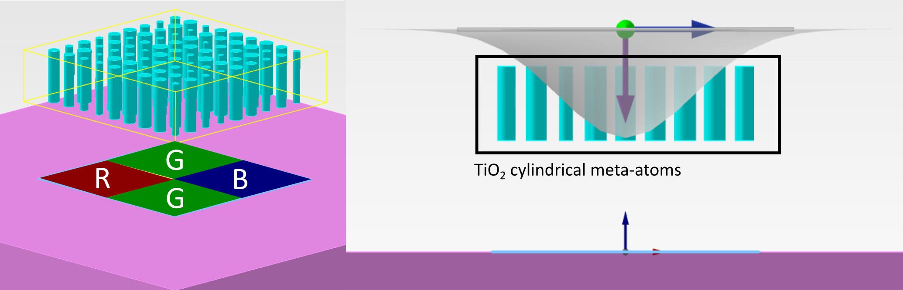
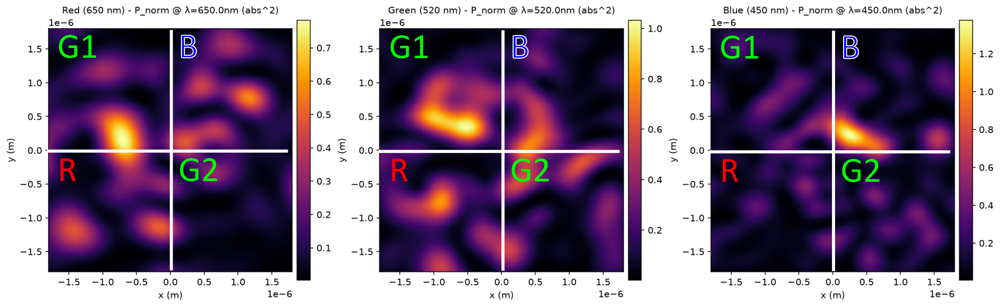
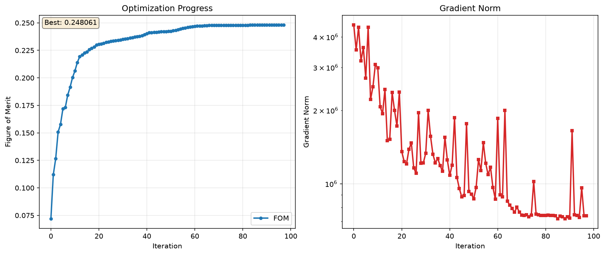
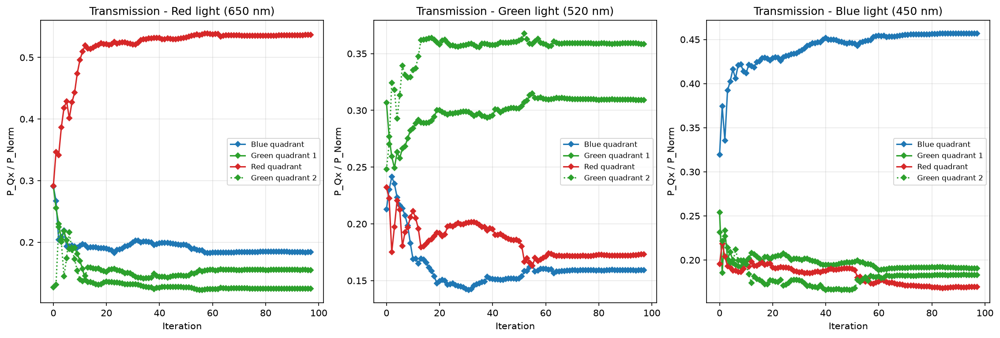
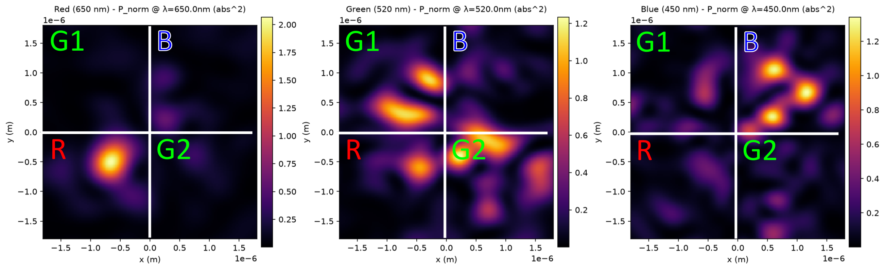
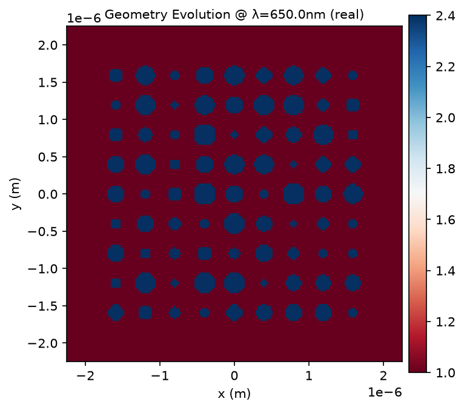

Inverse design of a color router lens using lumopt2#
An example of using lumopt2 to conduct parametric optimization for a color router lens. The example uses a 3D FDTD simulation with pillars in air to route red, green, and blue light to different pixels, forming the basis of a color router.
Prerequisites:
Valid Lumerical FDTD license with Lumerical 2026 R1.2 release or newer.

Imports#
[ ]:
1from collections import OrderedDict
2from dataclasses import dataclass, field
3import math
4from typing import Any, ClassVar, Dict, Optional
5
6import ansys.lumerical.core as lumapi # isort: skip
7import ansys.lumerical.core.lumopt2 as lmpt # isort: skip
8
9import autograd.numpy as anp
10from lumopt2.utils.callbacks import BaseCallback
11from lumopt2.utils.panels import MonitorPanel, Panel, PanelState
12import numpy as np
Definitions#
Base simulation class#
This class defines general setup for the structure, and utility functions for setting up different configurations.
[ ]:
13class MetalensCis:
14 """FDTD simulation geometry for a metasurface color router with pillars in air.
15
16 A substrate is added but its index is set to 1.0.
17
18 Defines the FDTD region, Gaussian source, field monitors,
19 and pillar (cylinder) array for a four-channel (red, green1, green2,
20 blue) color router. Configurator methods allow switching the global
21 source wavelength via multi-configuration.
22 """
23
24 def __init__(
25 self,
26 bg_index,
27 pixel_size,
28 sub_depth,
29 focal_length,
30 meta_height,
31 meta_size,
32 meta_pitch,
33 red_wavelength,
34 blue_wavelength,
35 green1_wavelength,
36 green2_wavelength,
37 mesh_dx=0.025e-6,
38 mesh_dy=0.025e-6,
39 mesh_dz=0.025e-6,
40 pva_level=4,
41 meta_index=None,
42 meta_material=None,
43 field_width=None,
44 field_zmin=None,
45 field_zmax=None,
46 fdtd_zmin=None,
47 sub_index=None,
48 sub_material=None,
49 ):
50 self.bg_index = bg_index
51 self.sub_index = sub_index
52 self.sub_material = sub_material
53
54 self.pixel_size = pixel_size
55 self.sub_depth = sub_depth
56 self.focal_length = focal_length
57 self.meta_height = meta_height
58
59 self.meta_size = meta_size
60 self.meta_pitch = meta_pitch
61 self.field_width = field_width
62 self.field_zmin = field_zmin
63 self.field_zmax = field_zmax
64 self.meta_index = meta_index
65 self.meta_material = meta_material
66
67 self.red_wavelength = red_wavelength
68 self.blue_wavelength = blue_wavelength
69 self.green1_wavelength = green1_wavelength
70 self.green2_wavelength = green2_wavelength
71 self.mesh_dx = mesh_dx
72 self.mesh_dy = mesh_dy
73 self.mesh_dz = mesh_dz
74 self.pva_level = pva_level
75 self.fdtd_zmin = fdtd_zmin
76
77 def generate_base_sim(self, fdtd):
78 """Build the base FDTD simulation.
79
80 Adds the FDTD solver region, backward Gaussian source, field regions
81 for each color channel and the normalization area, DFT monitors,
82 and the pillar cylinder array. The source wavelength is
83 set to ``red_wavelength`` by default; use the ``*_configurator``
84 methods to switch wavelengths for each simulation config.
85
86 Parameters
87 ----------
88 fdtd : lumapi.FDTD
89 Open FDTD session to populate.
90
91 Returns
92 -------
93 tuple[int, int]
94 ``(num_cyl_x, num_cyl_y)`` - number of cylinders along each axis.
95 """
96 fdtd.redrawoff()
97
98 fdtd.setglobalsource("center wavelength", self.red_wavelength)
99 fdtd.setglobalsource("wavelength span", 0)
100 fdtd.setglobalsource("optimize for short pulse", False)
101
102 fdtd.setglobalmonitor("sample spacing", "uniform") # Necessary?
103 fdtd.setglobalmonitor("use wavelength spacing", True)
104 fdtd.setglobalmonitor("use source limits", True)
105 fdtd.setglobalmonitor("frequency points", 1)
106
107 ## SETUP FDTD
108 fdtd_xspan = self.pixel_size * 1.25
109 fdtd_yspan = self.pixel_size * 1.25
110 fdtd_zmax = self.focal_length + self.meta_height + 1.0e-6
111 if self.fdtd_zmin is None:
112 fdtd_zmin = -self.sub_depth - 0.5e-6
113 else:
114 fdtd_zmin = self.fdtd_zmin
115 xmin_bc = "PML"
116 ymin_bc = "PML"
117
118 fdtd.addfdtd(
119 {
120 "dimension": "3D",
121 "index": self.bg_index,
122 "x": 0,
123 "x span": fdtd_xspan,
124 "y": 0,
125 "y span": fdtd_yspan,
126 "z min": fdtd_zmin,
127 "z max": fdtd_zmax,
128 "mesh type": "uniform",
129 "dx": self.mesh_dx,
130 "dy": self.mesh_dy,
131 "dz": self.mesh_dz,
132 "x min bc": xmin_bc,
133 "x max bc": "PML",
134 "y min bc": ymin_bc,
135 "y max bc": "PML",
136 "z min bc": "PML",
137 "z max bc": "PML",
138 "mesh refinement": "precise volume average",
139 "meshing refinement": self.pva_level,
140 "simulation time": 4e-12,
141 }
142 )
143
144 ## SETUP SOURCE (Gaussian source)
145 fdtd.addgaussian(
146 {
147 "injection axis": "z-axis",
148 "direction": "Backward",
149 "polarization angle": 0,
150 "x": 0,
151 "x span": fdtd_xspan,
152 "y": 0,
153 "y span": fdtd_yspan,
154 "z": self.focal_length + self.meta_height + 0.5e-6,
155 "waist radius w0": self.pixel_size / 2,
156 "distance from waist": 0.0e-6,
157 "override global source settings": False,
158 }
159 )
160
161 ## SETUP FIELD REGIONS
162 if self.field_width is None:
163 field_width = self.pixel_size
164 else:
165 field_width = self.field_width
166 if self.field_zmin is None:
167 field_zmin = -self.sub_depth
168 else:
169 field_zmin = self.field_zmin
170 if self.field_zmax is None:
171 field_zmax = 0.0e-6
172 else:
173 field_zmax = self.field_zmax
174 if math.isclose(field_zmin, field_zmax, rel_tol=1e-9, abs_tol=1e-10):
175 field_type = "2D Z-normal"
176 else:
177 field_type = "3D"
178
179 fdtd.addfieldregion(
180 {
181 "name": "fom_red",
182 "monitor type": field_type,
183 "x": -self.pixel_size / 4,
184 "x span": field_width,
185 "y": -self.pixel_size / 4,
186 "y span": field_width,
187 "z min": field_zmin,
188 "z max": field_zmax,
189 "nuttall window pulse": False,
190 "override global monitor settings": False, # important!
191 }
192 )
193 fdtd.addfieldregion(
194 {
195 "name": "fom_blue",
196 "monitor type": field_type,
197 "x": self.pixel_size / 4,
198 "x span": field_width,
199 "y": self.pixel_size / 4,
200 "y span": field_width,
201 "z min": field_zmin,
202 "z max": field_zmax,
203 "nuttall window pulse": False,
204 "override global monitor settings": False, # important!
205 }
206 )
207 fdtd.addfieldregion(
208 {
209 "name": "fom_green1",
210 "monitor type": field_type,
211 "x": -self.pixel_size / 4,
212 "x span": field_width,
213 "y": self.pixel_size / 4,
214 "y span": field_width,
215 "z min": field_zmin,
216 "z max": field_zmax,
217 "nuttall window pulse": False,
218 "override global monitor settings": False, # important!
219 }
220 )
221 fdtd.addfieldregion(
222 {
223 "name": "fom_green2",
224 "monitor type": field_type,
225 "x": self.pixel_size / 4,
226 "x span": field_width,
227 "y": -self.pixel_size / 4,
228 "y span": field_width,
229 "z min": field_zmin,
230 "z max": field_zmax,
231 "nuttall window pulse": False,
232 "override global monitor settings": False, # important!
233 }
234 )
235 fdtd.addfieldregion(
236 {
237 "name": "fom_norm",
238 "monitor type": field_type,
239 "x": 0.0,
240 "x span": self.pixel_size,
241 "y": 0.0,
242 "y span": self.pixel_size,
243 "z min": field_zmin,
244 "z max": field_zmax,
245 "nuttall window pulse": False,
246 "override global monitor settings": False, # important!
247 }
248 )
249
250 ## SETUP MONITORS FOR POWER DENSITY AT THE BOTTOM OF THE PIXEL
251
252 fdtd.adddftmonitor(
253 {"name": "P_norm", "monitor type": "2D Z-normal", "x": 0, "x span": self.pixel_size, "y": 0, "y span": self.pixel_size, "z": field_zmin}
254 )
255
256 fdtd.adddftmonitor(
257 {
258 "name": "P_Q1",
259 "monitor type": "2D Z-normal",
260 "x": self.pixel_size / 4,
261 "x span": self.pixel_size / 2,
262 "y": self.pixel_size / 4,
263 "y span": self.pixel_size / 2,
264 "z": field_zmin,
265 }
266 )
267
268 fdtd.adddftmonitor(
269 {
270 "name": "P_Q2",
271 "monitor type": "2D Z-normal",
272 "x": -self.pixel_size / 4,
273 "x span": self.pixel_size / 2,
274 "y": self.pixel_size / 4,
275 "y span": self.pixel_size / 2,
276 "z": field_zmin,
277 }
278 )
279
280 fdtd.adddftmonitor(
281 {
282 "name": "P_Q3",
283 "monitor type": "2D Z-normal",
284 "x": -self.pixel_size / 4,
285 "x span": self.pixel_size / 2,
286 "y": -self.pixel_size / 4,
287 "y span": self.pixel_size / 2,
288 "z": field_zmin,
289 }
290 )
291
292 fdtd.adddftmonitor(
293 {
294 "name": "P_Q4",
295 "monitor type": "2D Z-normal",
296 "x": self.pixel_size / 4,
297 "x span": self.pixel_size / 2,
298 "y": -self.pixel_size / 4,
299 "y span": self.pixel_size / 2,
300 "z": field_zmin,
301 }
302 )
303
304 ## SETUP XZ FIELD MONITOR
305 fdtd.adddftmonitor(
306 {
307 "name": "XZ_field",
308 "enabled": False,
309 "monitor type": "2D Y-normal",
310 "x": 0,
311 "x span": fdtd_xspan,
312 "y": self.pixel_size / 4,
313 "z min": fdtd_zmin,
314 "z max": fdtd_zmax,
315 "output power": False,
316 }
317 )
318
319 ## SETUP XZ FIELD MONITOR
320 fdtd.adddftmonitor(
321 {
322 "name": "XY_field",
323 "enabled": False,
324 "monitor type": "2D Z-normal",
325 "x": 0,
326 "x span": fdtd_xspan,
327 "y": 0,
328 "y span": fdtd_yspan,
329 "z": field_zmax,
330 "output power": False,
331 }
332 )
333
334 ## SETUP INDEX MONITOR TO MONITOR GEOMETRY EVOLUTION
335
336 fdtd.addindex(
337 {
338 "name": "geometry_evolution",
339 "monitor type": "2D Z-normal",
340 "x": 0,
341 "x span": fdtd_xspan,
342 "y": 0,
343 "y span": fdtd_yspan,
344 "z": self.focal_length + 0.5 * self.meta_height,
345 }
346 )
347
348 ## SETUP SUBSTRATE
349 if self.sub_index is None: # Material name must have been provided
350 if self.sub_material is None:
351 raise ValueError("sub_material and sub_index were not provided")
352 else:
353 sub_material = self.sub_material
354 else: # Material index must have been provided
355 if self.sub_material is None:
356 sub_material = "<Object defined dielectric>"
357 else:
358 raise ValueError("sub_material and sub_index were not provided")
359
360 fdtd.addrect(
361 {
362 "name": "substrate",
363 "material": sub_material,
364 "x": 0,
365 "x span": self.pixel_size * 3,
366 "y": 0,
367 "y span": self.pixel_size * 3,
368 "z min": -self.sub_depth - 1.0e-6,
369 "z max": 0.0e-6,
370 }
371 )
372 if sub_material == "<Object defined dielectric>":
373 fdtd.set("index", self.sub_index)
374
375 ## SETUP PILLARS
376 if self.meta_index is None: # Material name must have been provided
377 if self.meta_material is None:
378 raise ValueError("meta_material and meta_index were not provided")
379 else:
380 meta_material = self.meta_material
381 else: # Material index must have been provided
382 if self.meta_material is None:
383 meta_material = "<Object defined dielectric>"
384 else:
385 raise ValueError("meta_material and meta_index were not provided")
386
387 num_cyl_x_pos = math.floor((self.meta_size / 2 - self.meta_pitch / 2) / self.meta_pitch)
388 num_cyl_y_pos = math.floor((self.meta_size / 2 - self.meta_pitch / 2) / self.meta_pitch)
389 num_cyl_x = 2 * num_cyl_x_pos + 1
390 num_cyl_y = 2 * num_cyl_y_pos + 1
391 ix_origin = -num_cyl_x_pos
392 iy_origin = -num_cyl_y_pos
393
394 for iy in range(num_cyl_y):
395 for ix in range(num_cyl_x):
396 idx = iy * num_cyl_x + ix
397 fdtd.addcircle(
398 {
399 "name": f"cyl{idx}",
400 "material": meta_material,
401 "x": (ix + ix_origin) * self.meta_pitch,
402 "y": (iy + iy_origin) * self.meta_pitch,
403 "z min": self.focal_length,
404 "z max": self.focal_length + self.meta_height,
405 "radius": self.meta_pitch / 4,
406 }
407 )
408 if meta_material == "<Object defined dielectric>":
409 fdtd.set("index", self.meta_index)
410
411 fdtd.redrawon()
412
413 return num_cyl_x, num_cyl_y
414
415 def red_configurator(self, fdtd):
416 """Set the global source to the red wavelength."""
417 fdtd.setglobalsource("center wavelength", self.red_wavelength)
418
419 def blue_configurator(self, fdtd):
420 """Set the global source to the blue wavelength."""
421 fdtd.setglobalsource("center wavelength", self.blue_wavelength)
422
423 def green1_configurator(self, fdtd):
424 """Set the global source to the green1 wavelength."""
425 fdtd.setglobalsource("center wavelength", self.green1_wavelength)
426
427 def green2_configurator(self, fdtd):
428 """Set the global source to the green2 wavelength."""
429 fdtd.setglobalsource("center wavelength", self.green2_wavelength)
Visualization utility classes#
These classes help to define custom visualizers during optimization.
For this example, we will plot the usual FoM and gradient evolution, geometry evolution, field intensity distribution at the pixel, as well as ratios of each quadrant’s transmission ratio to the total transmission (ignoring any reflected power). These visualizers enables you to see how the optimization is progressing in terms of key optimization and device metrics. To handle the different configurations, and the post-processing necessary for the quadrant ratios, custom callbacks and panels are defined.
The first class defines a custom panel that loads a specific configuration before rendering, building on top of a default monitor panel.
[ ]:
430@dataclass
431class ConfigMonitorPanel(MonitorPanel):
432 """MonitorPanel that loads a specific ProjectConfig before rendering.
433
434 Loads config_key's forward simulation, renders, then invalidates the
435 session loaded-state so subsequent callers always do a real reload.
436 """
437
438 config_key: Any = None
439
440 # Suppress the visualizer's blanket load_forward_results() call so it
441 # doesn't overwrite the session state before each panel's update() runs.
442 requires_forward_results: ClassVar[bool] = False
443
444 def update(self, ax, fig, project, state: PanelState) -> None:
445 """Load config_key's forward results, render, then invalidate session state.
446
447 Overrides MonitorPanel.update to load the forward results for
448 self.config_key before rendering, then invalidates the FDTD session's
449 _loaded_state so subsequent callers always perform a real reload.
450 """
451 fdtd_session = getattr(project, "fdtd_session", None)
452 if fdtd_session is None:
453 self._render_error(ax, "No FDTD session attached.")
454 return
455
456 try:
457 project.load_forward_results(config_key=self.config_key)
458 self._render(ax, fig, fdtd_session)
459 except Exception as exc:
460 self._render_error(ax, str(exc))
461 finally:
462 fdtd_session.invalidate_loaded_state()
This class defines a custom callback that collects the transmission ratios for each quadrant at each iteration and stores them as a dictionary for visualization.
[ ]:
463@dataclass
464class PQRatioCollectorCallback(BaseCallback):
465 """Compute and store P_Qx/P_Norm transmission ratios for every quadrant at each iteration using monitors in simulation.
466
467 Each config entry is a dict with keys ``'name'`` (str) and
468 ``'config_key'`` (ProjectConfig). ``history[name]`` is a list of
469 ``(n_quadrants,)`` arrays, one element appended per iteration.
470 """
471
472 configs: list # list of {"name": str, "config_key": Any}
473 norm_monitor: str
474 quadrant_monitors: tuple
475 history: Dict[str, list] = field(default_factory=dict, init=False) # History is plotted each iteration in panels
476
477 def __post_init__(self) -> None:
478 """Initialize per-configuration ratio history storage."""
479 # The history is a dict with different config names as keys. The value is a list of np.arrays that contains ratios for each quadrant.
480 self.history = {cfg["name"]: [] for cfg in self.configs}
481
482 def on_iteration_end(
483 self,
484 project,
485 iteration: int,
486 params: np.ndarray,
487 fom_value: float,
488 gradient: Optional[np.ndarray] = None,
489 **kwargs,
490 ) -> None:
491 """Override ``on_iteration_end`` from parent class to collect quadrant ratios.
492
493 Fetch transmission ratios for all configs and quadrants. If the fetch fails, fills with NaN.
494 """
495 fdtd_session = project.fdtd_session
496
497 for cfg in self.configs:
498 try:
499 project.load_forward_results(config_key=cfg["config_key"])
500 ratios = self._compute_ratios(fdtd_session)
501 except Exception:
502 ratios = np.full(len(self.quadrant_monitors), float("nan"))
503 self.history[cfg["name"]].append(ratios)
504
505 fdtd_session.invalidate_loaded_state()
506
507 def _compute_ratios(self, fdtd_session) -> np.ndarray:
508 """Return array of shape ``(num_quadrants,)`` with ``Qx/Norm`` ratios.
509
510 If something goes wrong, return nan.
511 """
512 n_q = len(self.quadrant_monitors)
513 try:
514 # Use the transmission Lumerical script function to get the power for each quadrant and normalize
515 fdtd = fdtd_session.fdtd
516 T_norm = float(fdtd.transmission(self.norm_monitor))
517 ratios = np.full(n_q, float("nan"))
518 for i, q_mon in enumerate(self.quadrant_monitors):
519 ratios[i] = float(fdtd.transmission(q_mon)) / T_norm
520 return ratios
521 except Exception:
522 return np.full(n_q, float("nan"))
This class defines another custom panel that uses results from the collector to plot the transmission ratios for each quadrant.
[ ]:
523@dataclass
524class PQRatioPanel(Panel):
525 """
526 Panel that plots P_Qx/P_Norm for all four quadrants of one config.
527
528 Relies on the callback collector to collect the data first.
529 """
530
531 # kw_only=True lets these required fields follow Panel's optional title field.
532 collector: PQRatioCollectorCallback = field(kw_only=True)
533 config_name: str = field(kw_only=True)
534 line_styles: list = field(kw_only=True)
535 title: str = field(kw_only=True)
536 ylabel: str = field(kw_only=True)
537
538 def setup(self, ax, fig, project) -> None:
539 """Initialize labels, title, and grid for the ratio panel."""
540 ax.set_title(self.title)
541 ax.set_xlabel("Iteration")
542 ax.set_ylabel(self.ylabel)
543 ax.grid(True, alpha=0.3)
544
545 def update(self, ax, fig, project, state: PanelState) -> None:
546 """Render the latest per-iteration quadrant ratios for one config."""
547 raw = self.collector.history.get(self.config_name, [])
548 if not raw:
549 ax.clear()
550 ax.text(
551 0.5,
552 0.5,
553 f"No history for config '{self.config_name}'.",
554 ha="center",
555 va="center",
556 transform=ax.transAxes,
557 fontsize=8,
558 color="red",
559 wrap=True,
560 )
561 return
562 ax.clear()
563 for i, style in enumerate(self.line_styles):
564 ax.plot(state.iterations[: len(raw)], [r[i] for r in raw], markersize=4, **style)
565 ax.set_title(self.title)
566 ax.set_xlabel("Iteration")
567 ax.set_ylabel(self.ylabel)
568 ax.legend(fontsize=8)
569 ax.grid(True, alpha=0.3)
Utility functions#
These utility functions help with FoM definition. Here the FoM uses a soft minimum and soft maximum to define a optimization landscape that is differentiable and smooth to traverse for the minimizer.
[ ]:
570def softmin(x, beta=10.0, axis=-1):
571 """Differentiable soft minimum via log-sum-exp.
572
573 Parameters
574 ----------
575 x : array-like
576 Input array.
577 beta : float, optional
578 Sharpness; larger values produce a tighter approximation of ``min``.
579 axis : int, optional
580 Axis along which to reduce.
581
582 Returns
583 -------
584 array-like
585 Soft minimum of *x* along *axis*.
586 """
587 # stable log-sum-exp along 'axis'
588 m = anp.max(-beta * x, axis=axis, keepdims=True)
589 lse = m + anp.log(anp.sum(anp.exp(-beta * x - m), axis=axis, keepdims=True))
590 out = -(1.0 / beta) * anp.squeeze(lse, axis=axis)
591 return out
[ ]:
592def softmax(x, beta=10.0, axis=-1):
593 """Differentiable soft maximum via log-sum-exp.
594
595 Parameters
596 ----------
597 x : array-like
598 Input array.
599 beta : float, optional
600 Sharpness; larger values produce a tighter approximation of ``max``.
601 axis : int, optional
602 Axis along which to reduce.
603
604 Returns
605 -------
606 array-like
607 Soft maximum of *x* along *axis*.
608 """
609 # stable log-sum-exp along 'axis'
610 m = anp.max(beta * x, axis=axis, keepdims=True)
611 lse = m + anp.log(anp.sum(anp.exp(beta * x - m), axis=axis, keepdims=True))
612 out = (1.0 / beta) * anp.squeeze(lse, axis=axis)
613 return out
Initialize simulation#
Define parameters and initialize the simulation
[ ]:
614# Create geometry
615red_wavelength = 650e-9
616green_wavelength = 520e-9
617blue_wavelength = 450e-9
618
619bg_index = 1.0 # Background material: air
620sub_index = 1.0 # No substrate
621pixel_size = 3.2e-6 + 3.2e-6 / 8
622sub_depth = 4e-6
623focal_length = 1.5e-6
624meta_height = 1e-6
625meta_size = 3.2e-6 + 2 * 3.2e-6 / 8
626meta_pitch = 3.2e-6 / 8
627meta_index = 2.4
628field_width = pixel_size / 2.0 - 0.3e-6 # field_width = pixel_size/2. - 0.050e-6 #field_width = 1.2e-6
629field_zmin = 0
630field_zmax = 0
631fdtd_zmin = -0.25e-6
632mesh_dx = 0.025e-6
633mesh_dy = 0.025e-6
634mesh_dz = 0.025e-6
635pva_level = 8
636min_r = 0.05e-6 # in m
637max_r = meta_pitch / 2 - min_r # in m
Optimization region
[ ]:
638optimization_region = lmpt.Box(
639 x_span=meta_size, y_span=meta_size, z_min=focal_length, z_max=focal_length + meta_height, dx=mesh_dx, dy=mesh_dy, dz=mesh_dz
640)
Setup the simulation using the class above.
[ ]:
641meta_sim = MetalensCis(
642 bg_index=bg_index,
643 sub_index=sub_index,
644 red_wavelength=red_wavelength,
645 green1_wavelength=green_wavelength,
646 green2_wavelength=green_wavelength,
647 blue_wavelength=blue_wavelength,
648 mesh_dx=mesh_dx,
649 mesh_dy=mesh_dy,
650 mesh_dz=mesh_dz,
651 pva_level=pva_level,
652 pixel_size=pixel_size,
653 sub_depth=sub_depth,
654 focal_length=focal_length,
655 meta_height=meta_height,
656 meta_size=meta_size,
657 meta_pitch=meta_pitch,
658 meta_index=meta_index,
659 field_width=field_width,
660 field_zmin=field_zmin,
661 field_zmax=field_zmax,
662 fdtd_zmin=fdtd_zmin,
663)
664num_cyl_x, num_cyl_y = meta_sim.generate_base_sim(lumapi.FDTD(hide=True))
665print(f"Number of cylinders: {num_cyl_x} x {num_cyl_y}")
Define the bounds array
[ ]:
666num_cyl = num_cyl_x * num_cyl_y
667bounds = [(min_r, max_r)] * num_cyl
Parametrization#
Define the parametrization such that the radius of each pillar is free parameter.
[ ]:
668def param_func(params):
669 """Map a flat parameter array to an ordered dict of cylinder radii.
670
671 Parameters
672 ----------
673 params : array-like
674 Sequence of radius values, one per cylinder.
675
676 Returns
677 -------
678 OrderedDict
679 Mapping of ``'cyl{idx}::radius'`` keys to the corresponding values
680 in *params*.
681 """
682 return OrderedDict({f"cyl{idx}::radius": value for idx, value in enumerate(params)})
[ ]:
683parametrization = lmpt.Parametrization(func=param_func, bounds=bounds, optimization_region=optimization_region, dp=5e-10)
Figure of merit#
First, define project configurations, since each field region is single wavelength
[ ]:
684config_red = lmpt.ProjectConfig(configurator=meta_sim.red_configurator, filename_suffix="red")
685config_green = lmpt.ProjectConfig(configurator=meta_sim.green1_configurator, filename_suffix="green1")
686config_blue = lmpt.ProjectConfig(configurator=meta_sim.blue_configurator, filename_suffix="blue")
Then, define the field results for each wavelength. Normalize the intensity of each region by the total intensity falling on the entire area. Also define the cross-talk terms to help set up the FoM such that cross talk is minimized.
[ ]:
687intensity_red = lmpt.FieldResults(monitor_name="fom_red", metric="intensity", wavelengths=red_wavelength, config=config_red)
688intensity_red_cross_green1 = lmpt.FieldResults(monitor_name="fom_green1", metric="intensity", wavelengths=red_wavelength, config=config_red)
689intensity_red_cross_green2 = lmpt.FieldResults(monitor_name="fom_green2", metric="intensity", wavelengths=red_wavelength, config=config_red)
690intensity_red_cross_blue = lmpt.FieldResults(monitor_name="fom_blue", metric="intensity", wavelengths=red_wavelength, config=config_red)
691red_norm = lmpt.FieldResults(monitor_name="fom_norm", metric="intensity", wavelengths=red_wavelength, config=config_red)
692
693intensity_green1 = lmpt.FieldResults(monitor_name="fom_green1", metric="intensity", wavelengths=green_wavelength, config=config_green)
694intensity_green2 = lmpt.FieldResults(monitor_name="fom_green2", metric="intensity", wavelengths=green_wavelength, config=config_green)
695intensity_green_cross_red = lmpt.FieldResults(monitor_name="fom_red", metric="intensity", wavelengths=green_wavelength, config=config_green)
696intensity_green_cross_blue = lmpt.FieldResults(monitor_name="fom_blue", metric="intensity", wavelengths=green_wavelength, config=config_green)
697green_norm = lmpt.FieldResults(monitor_name="fom_norm", metric="intensity", wavelengths=green_wavelength, config=config_green)
698
699intensity_blue = lmpt.FieldResults(monitor_name="fom_blue", metric="intensity", wavelengths=blue_wavelength, config=config_blue)
700intensity_blue_cross_red = lmpt.FieldResults(monitor_name="fom_red", metric="intensity", wavelengths=blue_wavelength, config=config_blue)
701intensity_blue_cross_green1 = lmpt.FieldResults(monitor_name="fom_green1", metric="intensity", wavelengths=blue_wavelength, config=config_blue)
702intensity_blue_cross_green2 = lmpt.FieldResults(monitor_name="fom_green2", metric="intensity", wavelengths=blue_wavelength, config=config_blue)
703blue_norm = lmpt.FieldResults(monitor_name="fom_norm", metric="intensity", wavelengths=blue_wavelength, config=config_blue)
Define the figure of merit custom function next. Each of the area is represented by \(\frac{I}{1 + \text{softmax}\!\left(\sum_j I_{\text{crosstalk},j}\right)}\), where \(I\) is the normalized intensity and the sum runs over all crosstalk channels.
[ ]:
704def fom_softmin_ratios(x):
705 """Compute the FoM as the soft minimum of cross-talk-penalized intensity ratios.
706
707 Each color channel's contribution is the channel intensity normalized by
708 the total pixel power, divided by one plus the soft maximum of all
709 cross-talk intensities (also normalized). The overall FoM is the soft
710 minimum of these four per-channel values (red, green1, green2, blue).
711
712 Parameters
713 ----------
714 x : tuple
715 Fifteen scalar intensity values in the order expected by :data:`fom`.
716
717 Returns
718 -------
719 float
720 Scalar figure of merit.
721 """
722 (
723 intensity_red,
724 intensity_green1,
725 intensity_green2,
726 intensity_blue,
727 intensity_red_cross_green1,
728 intensity_red_cross_green2,
729 intensity_red_cross_blue,
730 intensity_green_cross_red,
731 intensity_green_cross_blue,
732 intensity_blue_cross_red,
733 intensity_blue_cross_green1,
734 intensity_blue_cross_green2,
735 red_norm,
736 green_norm,
737 blue_norm,
738 ) = x
739
740 red_fom = (intensity_red / red_norm) / (
741 1.0 + softmax(anp.array([intensity_red_cross_green1, intensity_red_cross_green2, intensity_red_cross_blue]), beta=10.0, axis=0) / red_norm
742 )
743 green1_fom = (2.0 * intensity_green1 / green_norm) / (
744 1.0 + softmax(anp.array([intensity_green_cross_red, intensity_green2, intensity_green_cross_blue]), beta=10.0, axis=0) / green_norm
745 )
746 green2_fom = (2.0 * intensity_green2 / green_norm) / (
747 1.0 + softmax(anp.array([intensity_green_cross_red, intensity_green1, intensity_green_cross_blue]), beta=10.0, axis=0) / green_norm
748 )
749 blue_fom = (intensity_blue / blue_norm) / (
750 1.0 + softmax(anp.array([intensity_blue_cross_green1, intensity_blue_cross_green2, intensity_blue_cross_red]), beta=10.0, axis=0) / blue_norm
751 )
752
753 return softmin(anp.array([red_fom, green1_fom, green2_fom, blue_fom]), beta=10.0, axis=0)
Finally, call the fom function to create the fom
[ ]:
754fom = lmpt.Fom(
755 [
756 intensity_red,
757 intensity_green1,
758 intensity_green2,
759 intensity_blue,
760 intensity_red_cross_green1,
761 intensity_red_cross_green2,
762 intensity_red_cross_blue,
763 intensity_green_cross_red,
764 intensity_green_cross_blue,
765 intensity_blue_cross_red,
766 intensity_blue_cross_green1,
767 intensity_blue_cross_green2,
768 red_norm,
769 green_norm,
770 blue_norm,
771 ],
772 fct=fom_softmin_ratios,
773)
Project#
Define the runner and set up project object.
[ ]:
774runner = lmpt.LocalRunner(resource="GPU")
775fdtd_session = lmpt.FdtdSession(show_fdtd_cad=False)
776
777project = lmpt.Project(setup=meta_sim.generate_base_sim, fdtd_session=fdtd_session, parametrization=parametrization, runner=runner, fom=fom)
Define a set of random initial parameters
[ ]:
778np.random.seed(17)
779params = np.random.rand(num_cyl) * (max_r - min_r) + min_r
Project validation#
You can use the commands below to validate the project setup and gradient computation before running. Only one of the command is enabled, but you can uncomment the others to test them as needed.
[ ]:
780project.visualize_geometry(params=params) # Visualize the setup
781# project.visualize_fom(params=params) # Test figure of merit computation
782# lmpt.validate_gradient(project=project, params=params, perturbation = 5e-10, indices=[1, 37, 80]) # Validate the gradient with finite differences
783# Convergence test for finite difference gradient estimation
784# lmpt.fd_sweep_perturbation(project=project, params=params, index=0, perturbation_values=np.logspace(-11, -8, 13))
Optimizer#
Set up the optimizer with L-BFGS-B method.
[ ]:
785optimizer = lmpt.ScipyOptimizer(method="L-BFGS-B", bounds=bounds, gtol=1e-20)
Callbacks#
We set up visualizers to monitor the optimization progress.
Visualizer 1: contains FoM and gradient information.
[ ]:
786fom_and_gradient_visualizer = lmpt.GraphicalVisualizer()
Visualizer 2: Use the index monitor to visualize geometry evolution during optimization.
[ ]:
787geometry_visualizer = lmpt.GraphicalVisualizer(
788 panels=[lmpt.MonitorPanel(monitor_name="geometry_evolution", result_name="index.index_x", operation="real", title="Geometry Evolution")],
789 figsize=(5, 5),
790 layout=(1, 1),
791 filename_prefix="geometry_evolution",
792)
Visualizer 3: contains the field intensity distribution for each wavelength for the whole pixel area.
[ ]:
793field_visualizer = lmpt.GraphicalVisualizer(
794 panels=[
795 ConfigMonitorPanel(
796 config_key=config_red,
797 monitor_name="P_norm",
798 result_name="E",
799 operation="abs^2",
800 title="Red (650 nm) - Intensity",
801 ),
802 ConfigMonitorPanel(
803 config_key=config_green,
804 monitor_name="P_norm",
805 result_name="E",
806 operation="abs^2",
807 title="Green (520 nm) - Intensity",
808 ),
809 ConfigMonitorPanel(
810 config_key=config_blue,
811 monitor_name="P_norm",
812 result_name="E",
813 operation="abs^2",
814 title="Blue (450 nm) - Intensity",
815 ),
816 ],
817 figsize=(15, 5),
818 layout=(1, 3),
819 filename_prefix="field_configs",
820)
Visualizer 4: contains the ratio of power in each quadrant in the pixel for each incident wavelength. This requires first initializing the custom callback defined earlier to collect the data each iteration and pre-process them.
[ ]:
821# First create the callback class, which has a method to collect the transmission each iteration and store them.
822# This callback collects from each of the three configurations and
823# monitors for the four quadrants, then calculates the ratio of each
824# quadrant to the total power in the pixel.
825pq_ratio_collector = PQRatioCollectorCallback(
826 configs=[
827 {"name": "red (650 nm)", "config_key": config_red},
828 {"name": "green (520 nm)", "config_key": config_green},
829 {"name": "blue (450 nm)", "config_key": config_blue},
830 ],
831 norm_monitor="P_norm",
832 quadrant_monitors=("P_Q1", "P_Q2", "P_Q3", "P_Q4"),
833)
834
835# Define line styles for each quadrant to be used in the visualizer.
836_quadrant_styles = [
837 {"color": "tab:blue", "linestyle": "-", "marker": "D", "label": "Blue quadrant"},
838 {"color": "tab:green", "linestyle": "-", "marker": "D", "label": "Green quadrant 1"},
839 {"color": "tab:red", "linestyle": "-", "marker": "D", "label": "Red quadrant"},
840 {"color": "tab:green", "linestyle": ":", "marker": "D", "label": "Green quadrant 2"},
841]
842
843# Plot the ratio of power in each quadrant for each configuration.
844pq_ratio_visualizer = lmpt.GraphicalVisualizer(
845 panels=[
846 PQRatioPanel(
847 collector=pq_ratio_collector,
848 config_name="red (650 nm)",
849 line_styles=_quadrant_styles,
850 title="Transmission - Red light (650 nm)",
851 ylabel="P_Qx / P_Norm",
852 ),
853 PQRatioPanel(
854 collector=pq_ratio_collector,
855 config_name="green (520 nm)",
856 line_styles=_quadrant_styles,
857 title="Transmission - Green light (520 nm)",
858 ylabel="P_Qx / P_Norm",
859 ),
860 PQRatioPanel(
861 collector=pq_ratio_collector,
862 config_name="blue (450 nm)",
863 line_styles=_quadrant_styles,
864 title="Transmission - Blue light (450 nm)",
865 ylabel="P_Qx / P_Norm",
866 ),
867 ],
868 figsize=(15, 5),
869 layout=(1, 3),
870 filename_prefix="pq_ratio_configs",
871)
Finally, combine all the callbacks into a list to be used in the optimization.
[ ]:
872callbacks = [
873 pq_ratio_collector,
874 fom_and_gradient_visualizer,
875 field_visualizer,
876 geometry_visualizer,
877 pq_ratio_visualizer,
878]
The initial field visualizer is shown below. As seen from the figure, the initial random structure does not provide good routing for different colors, and most of the intensity is not in the intended area.

Run optimization#
[ ]:
879# Define optimization session
880# Warning: Store_all_simulations=True does not work with the current ConfigMonitorPanel custom class.
881optimization = lmpt.Optimization(project, optimizer, callbacks, store_all_simulations=False)
882# Run the optimization
883result = optimization.run(initial_params=params)
Results#
Save the final results.
[ ]:
884best_params, best_fom = result
885project.save_project("color_router_final.fsp", params=best_params)
Result for the structure after 97 iterations is shown below, at which point the tolerance was reached.

The evolution of the transmission for each quadrant is shown below. As seen from the figure, the transmission for the intended quadrant for each wavelength improves significantly throughout the optimization.

The final field distribution is also shown below. Compared to the initial results, each wavelength is more focused in their designated areas.

The final geometry is shown below.
